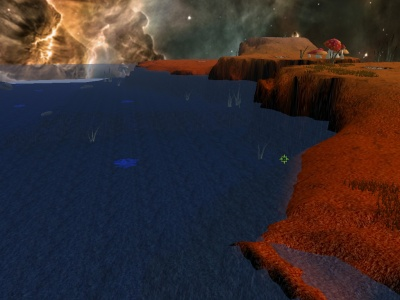
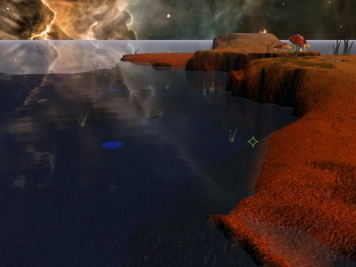
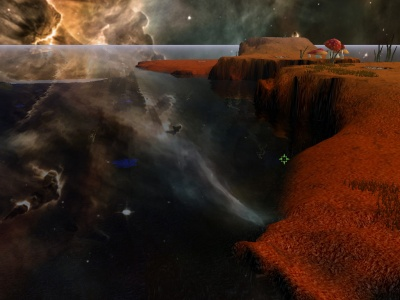

Mapdev:water
Water
The 'water' engine feature can be used for more than just water, it can be Lava, Slime, and completely invisible for maps in space.
Water is always at zero elevation, the terrain is positioned above and below the water using the minHeight and maxHeight values(see Mapdev:height).
Shading of the water is split into two parts; the surface of the water and the surface of the ground under the water
Water has five different rendering modes which can be set ingame by the command:
/water
- basic
- reflective
- dynamic
- reflective&refractive
- bumpmapped
The relevant soure code files
Specifications
Now because of the various graphical modes, and some options being shared, I've split this into sections.
Data Types
- int
- An integer number. eg. 5
- float
- A number with decimals. eg 1.023
- bool
- A value which can be true or false. eg true
- string
- Text, or more precisely a string of alphanumeric characters. eg "string of characters"
- rgb
- Three float components, representing red, green and blue components, ranged from 0.0 to 1.0. eg {0.0, 0.0, 0.0}
- float3
- Three float components, eg {0.0, 0.0, 0.0}
- float4
- Four float components, eg {0.0, 0.0, 0.0, 0.0}
Options that are always relevant
local mapinfo = {
...
tidalStrength = 0,
voidWater = false,
...
water = {
damage = 0.0,
absorb = {0.0, 0.0, 0.0},
baseColor = {0.0, 0.0, 0.0},
minColor = {0.0, 0.0, 0.0},
forceRendering = false,
planeColor = {0.0, 0.4, 0.0},
},
...
}
float tidalStrength default: ?
- FIXME:
bool voidWater default: false
- If true, the water will not be drawn. Also the terrain under the water will not be drawn.
float damage default: ?
- FIXME:
float3 absorb default: ?
- Used to calculate the colour of the terrain under the water, see below.
float3 baseCcolor default: ?
- Used to calculate the colour of the terrain under the water, see below.
float3 minColor default: ?
- Used to calculate the colour of the terrain under the water, see below.
The absorb, baseColor and minColor variables are used to alter the colour of the terrain under the water as defined in a glsl shader, see line 163.
bool forceRendering default: false
- If false, and the minimum height of the terrain is above 1.0, then the water will not be drawn.
float3 planeColor default: {0.0, 0.4, 0.0}
- sets the colour of the horizon water plane, to prevent it from being drawn at all you must comment out this line.
Basic
 |
{kind=link}
local mapinfo = {
...
water = {
repeatX = 0.0,
repeatY = 0.0,
--texture = "",
},
...
}
float repeatX default: 0
- control the texture repetition
float repeatY default: 0
- control the texture repetition
string texture default: 0
- the texture image to use, searches the ./maps/ directory of the map archive.
Reflective
| FIXME: need to place an image here |
local mapinfo = {
...
water = {
surfaceColor = {0.75, 0.8, 0.85},
},
...
}
FIXME: ?
float3f surfaceColor default: {0.0, 0.0, 0.0}
- Effects the reflected colour.
Dynamic
 |
{kind=link}
local mapinfo = {
...
water = {
surfaceColor = {0.75, 0.8, 0.85},
--foamTexture = "",
},
...
}
float3f surfaceColor default: {0.0, 0.0, 0.0}
- Effects the reflected colour.
FIXME: ?
Reflective and Refractive
From what i can tell, this mode is basically the same as the reflective mode, except that it distorts(refracts the light) of objects under the surface.
 |
{kind=link}
local mapinfo = {
...
water = {
surfaceColor = {0.75, 0.8, 0.85},
},
...
}
float3f surfaceColor default: {0.0, 0.0, 0.0}
- Effects the reflected colour.
Bump Mapped
| FIXME: need to place an image here |
local mapinfo = {
...
water = {
ambientFactor = 1.0,
diffuseFactor = 1.0,
specularFactor = 1.0,
specularPower = 20.0,
surfaceColor = {0.75, 0.8, 0.85},
surfaceAlpha = 0.55,
diffuseColor = {1.0, 1.0, 1.0},
specularColor = {0.5, 0.5, 0.5},
fresnelMin = 0.2,
fresnelMax = 0.8,
fresnelPower = 4.0,
reflectionDistortion = 1.0,
blurBase = 2.0,
blurExponent = 1.5,
perlinStartFreq = 8.0,
perlinLacunarity = 3.0,
perlinAmplitude = 0.9,
windSpeed = 1.0, --// does nothing yet
shoreWaves = true,
--foamTexture = "",
--normalTexture = "",
--caustics = {
-- "",
-- "",
--},
numTiles = 1,
hasWaterPlane = true,
},
...
}
FIXME: ?
Forum Discussions
- chockolate rain map discussion apparrently has soemthing in it i wanted to keep for later.. cant remember though...
- water height